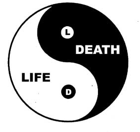
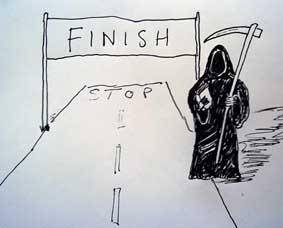
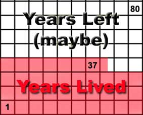
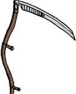

GENIUS ARTICLES
HOME - IQ TESTS - CREATIVITY - GENIUS - BRAIN STORMING - BLOG
Creative Fun and Games With The Grim Reaper!
Embracing DEATH as the ultimate
source of inspiration to propel you to greater heights of
creativity, insight, and intelligent living than ever
before!
This article looks at how the inevitability of death
can be used to spur us on to greater creativity, lead us to
live our lives more fully, and use our minds to understand the
world and each other better. For creative people, death is as
paramount as life in the creative processes of art and
innovation... . Now grab the cold boney hand of the Grim Reaper
as he leads you into the Valley of Death where you shall find
salvation and some of the best creative ideas you've ever
had!
I've got some shocking news for you. We're all gonna die!
Aaaaaaagggggghhhhh!
Okay, so maybe that isn't so shocking after all. I mean, we
all know that, right? Aunty Mabel died. You've had three pet
dogs that died. You've been to a funeral. You've seen dead
birds in the garden. Maybe you've even seen a dead body.
Eeeeuuurrgghh, the sallow waxwork look of the empty shell!
Like shit, death happens. It's happening right now as you
read this. Somebody somewhere had just breathed their last.
Brain cells are dying right now (not because my writing is so
so crap, just because that's what has been happening every day
since you were born).
We are used to thinking of LIFE as a creative force. We
think of ideas as bursting with life. But life is a process
that involves death. They are symbiotic. A processing and
recycling of energy and materials. Death, destruction,
dissolution, and the vacuum... gives rise to the opportunity
for the new. At the exact time that someone is dying NOW,
someone is being born. Life and Death travel together and are
part and parcel of Creation and the creative
processes.

Life is the new. Death is the elimination and transformation
of the old.
But DEATH has been ignored, particularly in the West. Death
is treated like one of those fair ground games where you have
to hammer the rabbit back down into it's hole every time it's
head pops up. When death pokes it's nose into our lives, we are
shocked, distraught, and overcome: but waste little time, as
our grief subsides, slamming the door in it's face. We don't
want to think of death. Death represents an end we don't want
to face. The end of "me" as I know it. Or the end of loved ones
-- and the searing pain that loss brings.
But DEATH is not to be ignored. The Grim Reaper has his
place to fill, and he does not come without some gifts to
compensate for his fearsome presence. Used rightly, the
awareness and respect of death can transform your entire
existence. Death could be THE catalyst you have been looking
for. The one thing that will spark an unheralded revolution in
your thinking. A presence in your life that will spark an
incredible transformation in your consciousness, and bring
wisdom, insight and intelligence to all your days. Death may
yet prove to be your finest mentor guiding you to the creative
life that is your true calling.
The Grim Reaper's Guide To Living Creatively
It is my duty to remind you of your contract. In signing up
for LIFE, you accepted the clause of DEATH. Death is your
payment for life. If I give you a free gift, you will not look
after it as well as you look after the gift that you paid a
billion dollars for. Without a payment, there is no value.
Death is the price that makes you value Life.
...Or it should.
The trouble is you've been denying death. You've ignored me,
the Grim Reaper. But I am patient. And I come to all. I carry a
glittering scythe to remind you: your life is yours (so live
it!) but your death is mine!
But I am not a cruel being, despite my cruel countenance and
the apparent cruelty of my work. I want you to have the best
life that you possibly can. I want you to live as creatively
and passionately and fully as possible. Then when I come for
you, you will be full of wonderful experiences and treasures of
a life well-lived. And I shall hear your story with delight,
rather than the pity which I feel for those who half-live and
squander the immense and priviledged opportunity which life
is.
Here is MY guide to becoming more creative, thinking
more creatively, and creating a life that you
LOVE:

Death is the Finishing
Line
Death is the full stop at the end of your
life sentence. Death gives meaning to what your life is
saying about you. Recognise and acknowledge that you are
'racing' towards death. Let the knowledge and awareness of this
End Point be with you every day. You are searching for your
destiny? Well, here it is. You are destined to die. But the
destiny of your life, what you do while you are living, is
within your own hands. It is up to YOU to create it. You must
innovate a life so splendid that your ultimate destination
(death) is rendered inconsequential. Live richly. Create wisely
and abundantly.

Your Allotted
Time
You only have so much time. And you don't know whether that is
four score and ten, a lot less, or a lot more. Best then to
think that your life time is precious and savour every moment.
Make the most of every minute you have. Organise your time
wisely. Use time management products, systems and programs in
order to function at your best, utilise your creative time
efficiently and ensure that you have enough TIME to reach all
of your goals. Tip: Create a life chart like the one pictured
above. Work out the average life span of people in your
country, town, or family, and create a chart with that number
of years on it. Then fill in all the squares of the years you
have left. And remember that there is no guarantee that you
will actually live that long. Life's a bitch sometimes -- and
we fall over a cliff, get run over, get sick or get shot when
we least expect it. (Also remember in the later years you may
not be as physically able to do all the things that you
want to do.) So create your chart, and tick off the months
and years that have gone forever. Let the reality of your
death, and your diminishing time, spur you to get off your butt
and get serious about living your life, creating what you want,
and making a difference somehow. Tip: Use the Death
Clock to get another guide to how much
life you have left.
Perspective Reframes
Lives
Death puts everything into it's proper perspective. Knowing
that, YES, you will die, and that everyone you love or
know will also die, really reframes your mental picture of
life. Death aligns your values, helps to eliminate false values
and brings your true values into play. What are YOU here for?
What is important to YOU? What do YOU value most?
|
"I am in the present.... That
is what I am called upon to serve, and I serve
it in all humility."
~ Igor Stravinsky, An
Autobiography
|
Appreciate Your Life
More
This is IT! This is all that
you know. All your religious beliefs and philosophies about
life after death may be based on lies, or ignorance, or wishful
thinking. But HERE is this LIFE! Here is this opportunity,
right now, to create, to make, to think and to do. You are
gloriously empowered to be creative now, in your life, in the
time that you have got left. For your sake, make the most of
it: live it! Live in the present, enjoy every moment. How can
you make it even better? Do your answers. Love it to
bits, love every moment, and make it splendid. Fill your days
with more and more magical moments. Moments where you feel
turned-on, blissed, deeply joyful, grateful, connected,
inspired, creative, dynamic, and overflowing with LOVE. For
what else is there? And what better than to feel great and to
enjoy your moments? Value every one of them.

Symbol of the
Scythe
The Grim Reaper's scythe cuts us ALL
down to size. In Australia, they have an expression,
Tall Poppy Syndrome, which entails a
habit of cutting down to size people who 'get above
themselves' (usually this means snobbish or arrogant people
rather than successful people). It doesn't matter who
you are, how much money you have, what success you have
achieved, or who you know, death is coming to harvest
you. Death puts the glamorous lifestyles of the rich and
famous (that we have all been hypnotised into wanting) into
perspective. In the light of death's inevitability for
everyone and every living thing, we are shown what is really
important to us as individuals and as a human race.
Re-examine your thoughts about people you envy and things
you think you want. Does death throw those people or things
in new light? Also, what can you take the scythe to in your
life? What can you cut out, or cut back to size, so it no
longer dominates your life? Can you be the Grim Reaper to
old outworn attitudes, negative thinking or unwanted habits?
Is it time to swing the scythe and cut those timewasters out
of your life?
Compassion and
Love
Compassion is a natural response as you open to the reality of
death and the fear and pain associated with it. We all feel the
terror of death, the instinctive desperate clinging to life.
Even the most fervent believer in a Heaven, or life after
death, will experience a moment of sheer terror when their life
is on the line. The awareness that death is coming to us all,
and to all those we love, means we share a collective
experience. Even the bullies, cheaters, and the people we most
envy feel scared by the prospect of death, and will feel the
pain and loss of those who are their friends and loved ones.
Death is the great unknown. If we knew exactly what happens
during and after death, we probably would feel better prepared
to meet it. But all we have is reports from people who have had
a death-like experience (the so-called Near-Death
Experience), and the
scriptures of philosophers and religious leaders, and the
scientific reports of what happens to the body upon death
from the observer's point of view. This amounts to very
little to you and me... and the fear persists. Greater still
in many respects is the grief we feel when someone we care
for dies. And the idea that this could happen to our loved
ones is a source of immense pain.... Let that pain drive you
to make the most of every minute you are with your friends
and family. Celebrate them, feel gratitude for their
presence in your life, and let them inspire you to do great
works of art, industry and success. Throughout history,
great thinkers have been inspired by their muses: lovers,
family, or friends. Get real with life and death. Put your
relationships in the proper perspective. They are temporary
gifts, chances for you to love and be loved. Let your love
for life blossom in the face of the coming death. Life is so
beautiful, so valuable, so finite....
|
"All beings
fear before danger, life is dear to all. When a
man considers this, he does not kill or cause
to kill."
~ Buddha
|
It's YOUR
creation
Death brings you into focus. Without the awareness of the
reality of death, your life is blurred, muddied, wasted.
Death is like
a punishment that sobers you up and makes you get serious
about life. You've been drunk on the ignorance of death, and
you are not clear about your place or your role.
But knowing that you will one day die, and that with every
breath you get closer to your death, forces you to look at
what you have. And what you have is the opportunity of life:
right now. And what is that opportunity but a time and a
place in which to create abundantly. You don't know what
comes after. All you know is what is here right now. How do
you want your life to be? What do you want to change? What
problems need solving? You are the focus point of creation.
The thoughts, decisions and actions you make will create the
life you live. You are responsible for your life, for your
world, by virtue of being alive. The very fact that you are
alive puts the responsibility for life right on your
shoulders. As you look around and see all that needs to be
done to help make this place a better world for all to live
in, ask yourself this: If I don't do it, who will? You are
here to create....
Legacy Thinking
You are going to die. But you can leave a legacy of great works. Your legacy may
be an investment fund that you have carefully built up that
will support your future generations. Or wonderful artworks,
inspiring writings, or scientific breakthroughs that you
have come up with. It might be that you have raised money to
help fund a cause. Or you leave a philosophy that helps even
one person feel happier than they did before they stumbled
across your thoughts. To leave a legacy that immortalises
your memory, ask yourself these kinds of questions:
- What can I CREATE that will outlive me?
- What do I want to CHANGE and IMPROVE for
others?
- How can I MAKE the world a better place for
others?
- How can I MAKE a difference to someone else?
- What message do I want to CONVEY to future
generations?
- How can I REPRESENT what I most value in a
painting / novel / sculpture?
- What can I DO on a large scale that is most in line
with my most important values?
- How can I make what I DO today so special that it
grows in value tomorrow?
- How can I do my WORK to the HIGHEST and BEST of my
ability?
- What can I do today that will continue to be of value
into the future?
The Life and Death of
Ideas
Walking about the countryside in the early summer, you are
struck by the abundance of life. And there is very little sign
of death. Perhaps the odd roadkill, a few bones in a field, a
cat carrying a dead mouse. Where are the millions of dead
bodies of animals, birds and insects? They have all been
reprocessed and recycled. They have been eaten, or rotted away
into the soil, and become food for plants. Things die and are
transformed into other things. Are you carrying around the
carcasses of dead ideas? Have some of your beliefs and
attitudes long since given up the ghost and now just stink like
rotting corpses? See if you can reprocess and recycle old ideas
and old beliefs, expand them, combine them with other ideas to
make new ones. Let that which has died become something else.
Use your creative power to recycle, reprocess and renew,
generating fresh ideas from the fertilised ground of your
mind.
In this article, we have looked at how having
an awareness of and appreciation for DEATH, can act as a
stimulus for inspired creative living. The Grim Reaper's advice
is to savour life, use your precious time wisely to live
creatively, passionately and dynamically. He offers tips,
strategies and attitudes which can cause a revolution in your
creative thinking and cause you to ramp up your creative
efforts to the best of your ability and talent. We're all going
to die... but until that day let's live as fully and richly as
we possibly can. Let's attack the problems and challenges the
world faces at this time with all the creative ingenuity and
innovation that we can muster. And let's LOVE this life -- for
it's the only one we've got!
WANTED: What do YOU think? I'd love
your feedback on this article. Email me:
wily[at]wilywalnut.com
|
THE BRAIN
SQUEEZER
NEWSLETTER!
Sign-Up For Wily Walnut's "The Brain
Squeezer" Newsletter and learn to squeeze all
the creative thinking juices from your brain!
Get your juiciest ideas and genius IQ power
flowing!
Wily Walnut:
Discover How To Banish The
Inner Moron, Shake Off the Dust Of
Mediocrity and Discover the Genius
You Were Born To Be!
|
Wily Walnut is the headbrain
at http://www.WilyWalnut.com
, your top
resource for unleashing the genius within,
becoming infinitely creative, intelligent and
brilliant in all that you
do!
GENIUS ARTICLES
HOME IQ TESTS - CREATIVITY - GENIUS - BRAIN STORMING - SELF-HELP - BRAINTEASERS - WILY WALNUT
|